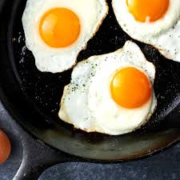

Fried Egg

Description
A Fried Egg, a delicacy found all around the globe.
Almost every culture in our world perhaps include fried egg. It is a simple meal to make,
only needing a single ingredient, an egg.
Ingredients
- Egg (Any Kind)
- Salt
- Cooking Oil
Steps
- Heat up the frying pan
- Crack the egg and place it in the frying pan
- Sprinkle salt unto the egg
- When the underside is done, flip the egg
- Wait until the desired egg consistency and remove the it from the frying pan